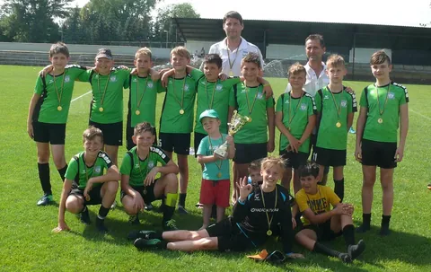

Prípravka 2018/2019

| Tím | Z | V | R | P | Skóre | B | +/− | |
|---|---|---|---|---|---|---|---|---|
| 1. | TJ Slavoj Boleráz | 20 | 18 | 0 | 2 | 193:9 | 54 | +24 |
| 2. | TJ Družstevník Zvončín | 20 | 18 | 0 | 2 | 174:15 | 54 | +24 |
| 3. | ŠK Blava 1928 Jaslovské Bohunice | 20 | 14 | 1 | 5 | 129:16 | 43 | +13 |
| 4. | OŠK Smolenice | 20 | 13 | 2 | 5 | 89:41 | 41 | +11 |
| 5. | TJ Vinohradník Suchá nad Parnou | 20 | 10 | 1 | 9 | 92:58 | 31 | +1 |
| 6. | FK Sokol Dolné Orešany | 20 | 9 | 2 | 9 | 48:59 | 29 | -1 |
| 7. | ŠK Slávia Zeleneč "B" | 20 | 9 | 1 | 10 | 50:78 | 28 | -2 |
| 8. | TJ Iskra Horné Orešany | 20 | 8 | 1 | 11 | 63:43 | 25 | -5 |
| 9. | TJ Družstevník Dechtice | 20 | 5 | 0 | 15 | 46:100 | 15 | -15 |
| 10. | OŠK Dolná Krupá | 20 | 2 | 0 | 18 | 26:162 | 6 | -24 |
| 11. | TJ Sokol Trstín / Bíňovce | 20 | 0 | 0 | 20 | 3:332 | 0 | -30 |
| 33 gólov | Teodor Urban |
| 31 gólov | Alex Antošík |
| 25 gólov | Marek Drobný |
| 21 gólov | Martin Hlavatý |
| 14 gólov | Sebastián Daniš |
| 11 gólov | Matúš Vlkovič |
| 11 gólov | Tomáš Fajtl |
| 11 gólov | Matúš Buchan |
| 8 gólov | Peter Hlavačka |
| 7 gólov | Jakub Palšovič |
| 5 gólov | Peter Petranský |
| 5 gólov | Eduard Krištofík |
| 3 góly | Andrej Lopatka |
| 2 góly | Matúš Cehlárik |
| 2 góly | Jakub Bublinec |
| 1.kolo 25.8.2018 (sobota) o 10:00 hod.: | TJ Slavoj Boleráz - ŠK Slávia Zeleneč "B" 16:0 (5:0) |
| góly: | 2´- Teodor Urban, 5´- Marek Drobný, 8´- Tomáš Fajtl, 16´- Alex Antošík, 23´- Eduard Krištofík, 26´- Alex Antošík, 28´- Teodor Urban, 38´- Marek Drobný, 41´- Martin Hlavatý, 43´- Sebastián Daniš, 44´- Teodor Urban, 45´- Martin Hlavatý, 46´- Andrej Lopatka, 47´- Jakub Palšovič, 49´- Alex Antošík, 50´- Teodor Urban |
| zostava: | Kristián Lančarič (K) - Peter Hlavačka, Jakub Palšovič, Andrej Lopatka, Sebastián Daniš, Marek Drobný, Tomáš Fajtl, Alex Antošík, Teodor Urban, Matúš Cehlárik, Martin Hlavatý, Eduard Krištofík, Filip Kolesík |
| 2.kolo 1.9.2018 (sobota) o 10:00 hod.: | ŠK BLAVA 1928 Jaslovské Bohunice - TJ Slavoj Boleráz 0:2 (0:1) |
| góly: | 22´- Jakub Palšovič, 50´- Alex Antošík |
| zostava: | Kristián Lančarič (K) - Peter Hlavačka, Jakub Palšovič, Andrej Lopatka, Sebastián Daniš, Marek Drobný, Alex Antošík, Teodor Urban, Matúš Cehlárik, Martin Hlavatý, Peter Petranský, Matúš Vlkovič, Jakub Bublinec |
| 3.kolo 8.9.2018 (sobota) o 10:30 hod.: | TJ Slavoj Boleráz - FK Sokol Dolné Orešany 5:0 (0:0) |
| góly: | 30´- Sebastián Daniš, 33´- Alex Antošík, 34´- Sebastián Daniš, 39´- Sebastián Daniš, 45´- Tomáš Fajtl |
| zostava: | Kristián Lančarič (K) - Peter Hlavačka, Jakub Palšovič, Andrej Lopatka, Sebastián Daniš, Tomáš Fajtl, Alex Antošík, Teodor Urban, Matúš Cehlárik, Martin Hlavatý, Peter Petranský, Matúš Vlkovič, Jakub Bublinec, Eduard Krištofík, Filip Kolesík, Matúš Buchan |
| 4.kolo 15.9.2018 (sobota) o 10:30 hod.: | OŠK Smolenice - TJ Slavoj Boleráz 0:9 (0:2) |
| góly: | 10´- Teodor Urban, 24´- Matúš Vlkovič, 30´- Teodor Urban, 32´- Teodor Urban, 35´- Alex Antošík, 40´- Marek Drobný, 43´- Alex Antošík, 47´- Eduard Krištofík, 48´- Martin Hlavatý |
| zostava: | Kristián Lančarič (K) - Peter Hlavačka, Jakub Palšovič, Andrej Lopatka, Sebastián Daniš, Tomáš Fajtl, Alex Antošík, Teodor Urban, Matúš Cehlárik, Martin Hlavatý, Peter Petranský, Matúš Vlkovič, Jakub Bublinec, Eduard Krištofík, Filip Kolesík, Matúš Buchan, Marek Drobný |
| 5.kolo 22.9.2018 (sobota) o 10:30 hod.: | TJ Slavoj Boleráz - TJ Družstevník Zvončín 1:3 (1:1) |
| gól: | 10´- Sebastián Daniš |
| zostava: | Kristián Lančarič - Peter Hlavačka, Jakub Palšovič, Andrej Lopatka, Sebastián Daniš, Tomáš Fajtl, Alex Antošík, Teodor Urban, Matúš Cehlárik, Martin Hlavatý, Peter Petranský, Matúš Vlkovič (K), Jakub Bublinec, Filip Kolesík, Matúš Buchan, Marek Drobný |
| 6.kolo 29.9.2018 (sobota) o 10:30 hod.: | TJ Slavoj Boleráz - TJ Družstevník Dolná Krupá 14:0 (5:0) |
| góly: | 6´- Marek Drobný, 19´- Martin Hlavatý, 21´- Alex Antošík, 23´- Martin Hlavatý, 25´- Jakub Palšovič, 27´- Teodor Urban, 28´- Sebastián Daniš, 30´- Matúš Buchan, 34´- Tomáš Fajtl, 38´- Martin Hlavatý, 39´- Tomáš Fajtl, 42´- Marek Drobný, 45´- Martin Hlavatý, 47´- vlastný |
| zostava: | Kristián Lančarič - Peter Hlavačka, Jakub Palšovič, Andrej Lopatka, Sebastián Daniš, Tomáš Fajtl, Alex Antošík, Teodor Urban, Matúš Cehlárik, Martin Hlavatý, Peter Petranský, Jakub Bublinec, Matúš Buchan (K), Marek Drobný |
| 7.kolo | voľno |
| 8.kolo 13.10.2018 (sobota) o 10:30 hod.: | TJ Sokol Trstín/Bíňovce - TJ Slavoj Boleráz 0:27 (0:13) |
| góly: | 1´- Jakub Palšovič, 2´- Marek Drobný, 4´- Martin Hlavatý, 5´- Marek Drobný, 7´- Marek Drobný, 10´- Matúš Vlkovič, 13´- Peter Petranský, 15´- Marek Drobný, 18´- Marek Drobný, 20´- Matúš Vlkovič, 23´- Matúš Vlkovič, 24´- Alex Antošík, 25´- Alex Antošík, 26´- Tomáš Fajtl, 29´- Alex Antošík, 29´- Alex Antošík, 30´- Teodor Urban, 30´- Teodor Urban, 32´- Tomáš Fajtl, 34´- Jakub Palšovič, 34´- Teodor Urban, 36´- Tomáš Fajtl, 37´- Tomáš Fajtl, 45´- Matúš Vlkovič, 47´- Teodor Urban, 48´- Matúš Vlkovič, 49´- Eduard Krištofík |
| zostava: | Kristián Lančarič - Peter Hlavačka, Jakub Palšovič, Andrej Lopatka, Sebastián Daniš, Tomáš Fajtl, Alex Antošík, Teodor Urban, Matúš Cehlárik, Martin Hlavatý, Peter Petranský, Jakub Bublinec, Matúš Vlkovič (K), Marek Drobný, Filip Kolesík, Eduard Krištofík |
| 9.kolo 20.10.2018 (sobota) o 9:00 hod.: | TJ Slavoj Boleráz - TJ Iskra Horné Orešany 5:0 (1:0) |
| góly: | 17´- Alex Antošík, 29´- Teodor Urban, 33´- Matúš Buchan, 38´- Matúš Buchan, 40´- Marek Drobný |
| zostava: | Kristián Lančarič - Peter Hlavačka, Jakub Palšovič, Andrej Lopatka, Sebastián Daniš, Tomáš Fajtl, Alex Antošík, Teodor Urban, Martin Hlavatý, Peter Petranský, Jakub Bublinec, Matúš Vlkovič (K), Marek Drobný, Filip Kolesík |
| 10.kolo 27.10.2018 (sobota) o 10:30 hod.: | TJ Slavoj Boleráz - TJ Vinohradník Suchá nad Parnou 9:0 (4:0) |
| góly: | 2´- vlastný, 9´- Marek Drobný, 21´- Martin Hlavatý, 25´- Marek Drobný, 36´- Alex Antošík, 38´- Matúš Vlkovič, 42´- Alex Antošík, 46´- Matúš Buchan, 50´- Sebastián Daniš |
| zostava: | Kristián Lančarič - Eduard Krištofík, Jakub Palšovič, Andrej Lopatka, Sebastián Daniš, Tomáš Fajtl, Alex Antošík, Teodor Urban, Martin Hlavatý, Peter Petranský, Jakub Bublinec, Matúš Vlkovič (K), Marek Drobný, Filip Kolesík, Matúš Vlkovič |
| 11.kolo 3.9.2018 (sobota) o 10:30 hod.: | TJ Družstevník Dechtice - TJ Slavoj Boleráz 1:7 (0:5) |
| góly: | 2´- Peter Hlavačka, 5´- Tomáš Fajtl (pk), 6´- Peter Hlavačka, 9´- Peter Hlavačka, 13´- Matúš Vlkovič, 40´- Matúš Vlkovič, 49´- Andrej Lopatka |
| zostava: | Kristián Lančarič - Eduard Krištofík, Jakub Palšovič, Andrej Lopatka, Sebastián Daniš, Tomáš Fajtl, Alex Antošík, Teodor Urban, Martin Hlavatý, Peter Petranský, Matúš Vlkovič (K), Filip Kolesík, Matúš Vlkovič, Matúš Buchan, Matúš Cehlárik |
| 12.kolo 30.3.2019 (sobota) o 13:00 hod.: | ŠK Slávia Zeleneč "B" - TJ Slavoj Boleráz 0:6 (0:2) |
| góly: | 10´- Marek Drobný, 16´- Teodor Urban, 27´- Teodor Urban, 30´- Alex Antošík, 48´- Teodor Urban, 20´- Marek Drobný (pk) |
| zostava: | Kristián Lančarič - Eduard Krištofík, Jakub Palšovič, Andrej Lopatka, Sebastián Daniš, Tomáš Fajtl, Alex Antošík, Teodor Urban, Martin Hlavatý, Peter Petranský, Matúš Vlkovič (K), Matúš Cehlárik, Marek Drobný, Peter Hlavačka |
| 13.kolo 7.4.2019 (nedeľa) o 11:00 hod.: | TJ Slavoj Boleráz - ŠK BLAVA 1928 Jaslovské Bohunice 0:4 (0:1) |
| góly: | --- |
| zostava: | Kristián Lančarič - Eduard Krištofík, Jakub Palšovič, Sebastián Daniš, Alex Antošík, Teodor Urban, Martin Hlavatý, Peter Petranský, Matúš Vlkovič (K), Matúš Cehlárik, Marek Drobný, Peter Hlavačka, Matúš Buchan |
| 14.kolo 13.4.2019 (sobota) o 10:30 hod.: | FK Sokol Dolné Orešany - TJ Slavoj Boleráz 1:15 (1:5) |
| góly: | 9´- Martin Hlavatý, 13´- vlastný, 15´- Marek Drobný, 18´- Matúš Vlkovič, 22´- Alex Antošík, 26´- Marek Drobný, 28´- Matúš Buchan, 30´- Marek Drobný, 31´- Peter Petranský, 35´- Alex Antošík, 38´- Matúš Buchan, 46´- Marek Drobný, 48´- Martin Hlavatý, 49´- Marek Drobný, 50´- Martin Hlavatý |
| zostava: | Kristián Lančarič - Eduard Krištofík, Jakub Palšovič, Sebastián Daniš, Alex Antošík, Teodor Urban, Martin Hlavatý, Peter Petranský, Matúš Vlkovič (K), Matúš Cehlárik, Marek Drobný, Peter Hlavačka, Matúš Buchan, Jakub Bublinec |
| 15.kolo 20.4.2019 (sobota) o 10:30 hod.: | TJ Slavoj Boleráz - OŠK Smolenice 5:0 (4:0) |
| góly: | 1´- Peter Hlavačka, 17´- Alex Antošík, 18´- Matúš Cehlárik, 22´- Eduard Krištofík, 45´- Teodor Urban |
| zostava: | Kristián Lančarič - Eduard Krištofík, Jakub Palšovič, Sebastián Daniš, Alex Antošík, Teodor Urban, Tomáš Fajtl, Peter Petranský, Matúš Vlkovič (K), Matúš Cehlárik, Marek Drobný, Peter Hlavačka, Matúš Buchan, Jakub Bublinec, Andrej Lopatka |
| 16.kolo 27.4.2019 (sobota) o 10:30 hod.: | FC Agropo Zvončín - TJ Slavoj Boleráz 0:3 (0:1) |
| góly: | 13´- Teodor Urban, 26´- Tomáš Fajtl, 50´- Alex Antošík |
| zostava: | Kristián Lančarič - Jakub Palšovič, Sebastián Daniš, Alex Antošík, Teodor Urban, Tomáš Fajtl, Matúš Vlkovič (K), Marek Drobný, Peter Hlavačka, Andrej Lopatka, Filip Kolesík |
| 17.kolo 4.5.2019 (sobota) o 10:30 hod.: | OŠK Dolná Krupá - TJ Slavoj Boleráz 0:12 (0:8) |
| góly: | 3´ -Teodor Urban, 8´- Teodor Urban, 9´- Alex Antošík, 9´- Teodor Urban, 12´- Andrej Lopatka, 18´- Peter Hlavačka, 20´- Martin Hlavatý, 23´- Jakub Palšovič, 30´- Teodor Urban, 35´- Teodor Urban, 37´- Martin Hlavatý, 50´- Jakub Palšovič |
| zostava: | Kristián Lančarič - Jakub Palšovič, Sebastián Daniš, Alex Antošík, Teodor Urban, Matúš Vlkovič (K), Peter Hlavačka, Andrej Lopatka, Eduard Krištofík, Peter Petranský, Jakub Bublinec, Matúš Cehlárik, Martin Hlavatý |
| 18.kolo | voľno |
| 19.kolo 18.5.2019 (sobota) o 10:30 hod.: | TJ Slavoj Boleráz - TJ Sokol Trstín/Bíňovce 34:0 (18:0) |
| góly: | Martin Hlavatý-4, Teodor Urban-8, Matúš Buchan-4, Matúš Cehlárik, Alex Antošík-5, Peter Hlavačka-2, Sebastián Daniš-5, Jakub Bublinec-2, Peter Petranský-3 |
| zostava: | Kristián Lančarič - Sebastián Daniš, Alex Antošík, Teodor Urban, Matúš Vlkovič (K), Peter Hlavačka, Peter Petranský, Jakub Bublinec, Matúš Cehlárik, Martin Hlavatý, Matúš Buchan |
| 20.kolo 25.5.2019 (sobota) o 9:00 hod.: | TJ Iskra Horné Orešany - TJ Slavoj Boleráz 0:3 (0:2) |
| góly: | 8´- Sebastián Daniš, 15´- Alex Antošík, 46´- vlastný |
| zostava: | Kristián Lančarič - Sebastián Daniš, Alex Antošík, Teodor Urban, Matúš Vlkovič (K), Peter Petranský, Jakub Bublinec, Matúš Cehlárik, Martin Hlavatý, Matúš Buchan, Andrej Lopatka, Jakub Palšovič, Eduard Krištofík |
| 21.kolo 1.6.2019 (sobota) o 10:30 hod.: | TJ Vinohradník Suchá nad Parnou - TJ Slavoj Boleráz 0:9 (0:4) |
| góly: | 10´- Alex Antošík, 16´- Tomáš Fajtl, 22´- Matúš Vlkovič, 23´- Marek Drobný, 30´- Marek Drobný, 32´- Alex Antošík, 40´- Peter Hlavačka, 46´- Eduard Krištofík, 49´- Martin Hlavatý |
| zostava: | Kristián Lančarič - Sebastián Daniš, Alex Anrošík, Teodor Urban, Matúš Vlkovič (K), Peter Petranský, Matúš Cehlárik, Martin Hlavatý, Matúš Buchan, Jakub Palšovič, Eduard Krištofík, Marek Drobný, Tomáš Fajtl, Peter Hlavačka |
| 22.kolo 9.6.2019 (nedeľa) o 11:00 hod.: | TJ Slavoj Boleráz - TJ Družstevník Dechtice 11:0 (7:0) |
| góly: | 2´- Martin Hlavatý, 3´- Alex Antošík, 10´- Sebastián Daniš, 12´- Teodor Urban, 14´- Marek Drobný, 21´- Marek Drobný, 23´- Matúš Buchan, 27´- Alex Antošík, 28´- Marek Drobný, 30´- Martin Hlavatý, 41´- Teodor Urban |
| zostava: | Kristián Lančarič - Filip Kolesík, Marek Drobný, Teodor Urban, Matúš Buchan, Matúš Cehlárik, Alex Antošík, Matúš Vlkovič (K), Tomáš Fajtl, Sebastián Daniš, Jakub Palšovič, Martin Hlavatý, Peter Petranský, Andrej Lopatka, Eduard Krištofík, Jakub Bublinec |
15.6.2019 (sobota) záverečný turnaj víťazov skupín v Leopoldove
| Tím | Z | V | R | P | Skóre | B | |
|---|---|---|---|---|---|---|---|
| 1. | ŠK Slávia Zeleneč | 3 | 1 | 2 | 0 | 3:1 | 5 |
| 2. | PFK Piešťany B | 3 | 1 | 2 | 0 | 2:1 | 5 |
| 3. | TJ Slavoj Boleráz | 3 | 0 | 3 | 0 | 2:2 | 3 |
| 4. | OFK Dráhovce | 3 | 0 | 1 | 2 | 0:3 | 1 |
Zeleneč B - Piešťany B 0:0
Boleráz - Dráhovce 0:0
Piešťany B - Dráhovce 1:0
Zeleneč - Boleráz 1:1 (gól Hlavatý)
Boleráz - Piešťany B 1:1 (gól Hlavatý)
Drahovce - Zeleneč 0:2
Zostava: Kristián Lančarič - Peter Hlavačka, Andrej Lopatka, Sebastián Daniš, Jakub Bublinec, Peter Petranský, Matúš Cehlárik, Alex Antošík, Matúš Buchan, Marek Drobný, Matúš Vlkovič (K), Martin Hlavatý, Teodor Urban, Jakub Palšovič
Tréner: Marek Daniš
Asistent: Peter Petranský
Zdroj: starý web klubu slavojboleraz.webnode.sk, prevzaté 16. 11. 2026 bez úprav údajov.